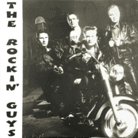

the Rockin' Guys - Estonia Rock And Roll (Album, 2000)
01 - Hot Dog (2:14)
02 - Baby Let's Play House (2:26)
03 - Good Luck Charm (2:48)
04 - Rockin' Robin (2:57)
05 - Saturday Night (2:47)
06 - Twenty Flight Rock (2:22)
07 - Stood Up (2:39)
08 - Keep A Knockin' (2:42)
09 - That's Allright (2:38)
10 - Cry Baby (3:18)
11 - I'm Walkin' (2:22)
12 - Peter Gunn Theme (4:23)
© Castle Records :: [Castle 12-17]
Notes
Estonia.
Andrus Kasesalu - Vocals, Bass
Ülari Kirsipuu - Vocals, Saxophone
Tõnu Hallik - Guitar
Marek Lillemägi - Drums
Produced by Red Hot Productions
Recorded in Tallin, Estonia 1998-2000
reference information: Discogs®
Review
298/366 (Project 366)
Estonian way of doing authentic rockin' and rollin', fifties rockabilly and just fine music. The retouching of such famous songs in such a rather prominent manner looks bright. Whenever I listen to this album, I want to describe it as close to a masterpiece. In the context of the fact that there is little to complain about or that was not part of the idea. It's colorful, it's just good.
From the very first composition, you understand that there will be many surprising, pleasant and atmospheric moments. The songs sound so dynamic, lively, kindly, danceable in essence, cheerful, energetic, bouncing. Some shakin', some rockin' and roll on! The sound of guitars fascinatingly turn you on. Drums and percussion set the tone. Vocals and bass are magnificent and reinforce this unique vibe. Songs like "That's Allright" or "Saturday Night" dilute the overall picture with a somewhat entertaining sound (including because of the saxophone with the latter). The tenth track "Cry Baby", like some other songs, reminds me of the beginning of the 90s (although the album dates from the late 1990s). But there is a special fashion, taste and feel in sound. Perhaps this can be described as Pop wrap in a good style (and sense) for Rockabilly powered Rock'n'Roll. The album closes with just a combative rockin' instrumental "Peter Gunn Theme". Vibration and gloss, and with some mood of the early sixties Instrumental Pop music